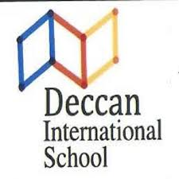
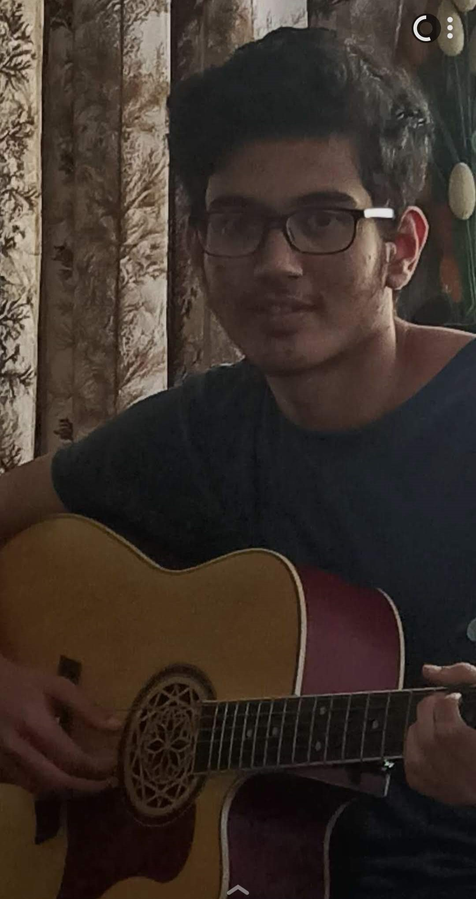
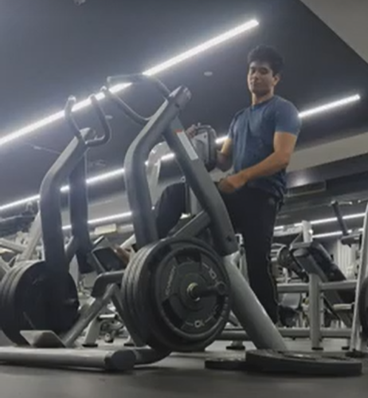

RESUME
ANIKETH BHARGAV
I'm passionate about technology and science, am a hardworker and a fast-learner with a keen interest in learning and a growing curiosity!
Contact details
Phone:
+91 8073932809
Email:
anikethbhargav05@gmail.comAdress:
334, Vasanthapura
Bangalore, India
=560061
Profile
"Work until you no longer have to introduce yourself."
-Harvey Specter
A few words about me
Until now, in my life, I change from active moments with a lot of variety, challenges and improvisations, to moments of tranquility and stability, being difficult to stay in a place during a long time. I consider myself a tolerant and respectful person with open mind and quite honest. I really like to listen people stories and backgrounds and their different experiences around the world.
Education
I began my educational journey at Deccan International School, where I completed my education up to the 3rd grade.
Later, I transitioned to National Public School (NPS) and continued my academic pursuits until the 10th grade. These formative years in both institutions have equipped me with a strong foundation and a diverse set of skills that contribute to my academic and personal growth.
I further continued my academic journey at Kumarans School, completing my education up to the 12th grade.

Subsequently, I pursued higher education in engineering at RV University, where I am currently in my 1st year. These experiences at Kumarans and RV University have played a crucial role in shaping my academic and intellectual pursuits, providing me with valuable knowledge and skills for my ongoing educational endeavors.
Skills
I possess a versatile skill set that encompasses proficiency in Python, HTML, CSS, and JavaScript, as well as C programming. My experience extends to working with hardware platforms such as Raspberry Pi and Arduino, showcasing my ability to bridge the gap between software and hardware. I embarked on my journey in computer science from the 8th grade, and since then, I have continuously honed my skills and deepened my understanding of various programming languages and technologies. Beyond technical expertise, I am recognized for my effective communication skills, making me a proficient speaker. Additionally, my experiences have molded me into a capable leader, adept at guiding and inspiring others within collaborative environments. These skills collectively contribute to my dynamic and comprehensive approach to problem-solving and project execution.
- Familiar Languages: Python, HTML, CSS, JavaScript C
- Technical Skills: Software Development, Web Development, Hardware Programming (Raspberry Pi, Arduino), Technical Problem-Solving, Computer Science, Systems Analysis, Data Structures and Algorithms, Code Optimization, Version Control (Git).
- Soft Skills:
Effective Communication,
Leadership,
Team Collaboration,
Adaptability,
Public Speaking,
Project Management,
Continuous Learning and Exploration.
Philosophy
I belive in ethic and moral not in imposed rules that you "have to" do or follow.
I believe life is made from different shades of grey, not from black and white. Furthermore, as a human being with rationality, I think it is our duty to take care of the world and treat others as one would like others to treat oneself. This way of perceiving reality affects my beliefs and my way of behaving. Summarizing on several points:
- Pragmatic
- Honest
- Respectful
- Open-minded
- Coherent
Projects
Piezoelectric Energy Project:
Developed an electric road infrastructure using piezoelectric sensors.
Integrated charging shoes to harness energy from footsteps for sustainable power generation.
Software Development:
Created a Python-based music player showcasing programming proficiency.
Crafted a matrimonial website using HTML, CSS, and JavaScript, demonstrating web development skills and UI design understanding.
Developed a travel app using Python, highlighting dedication to practical and user-friendly applications.
Data Analysis:
Conducted a comprehensive study of RV University canteens, providing valuable insights for optimization.
Raspberry Pi Projects:
Explored and implemented solutions at the intersection of hardware and software innovation.
Demonstrated enthusiasm for integrating technology into real-world applications.
Continuous Learning:
Emphasized commitment to continuous learning and application of technical skills to address real-world challenges.
Interests & Hobbies
I'm passionate about technology and human behavior, both determine almost all my interests and hobbies:
- GYM
- Guitar and keyboard
- Reading philosophy
- Basketball
- Programming
- Cooking
- Manga and Anime